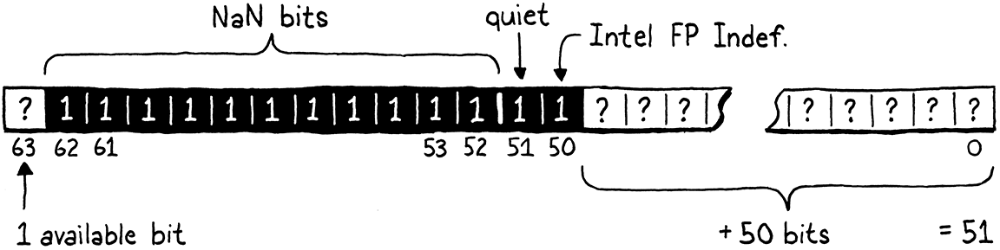

Optimization
Buổi tối là phần tuyệt vời nhất trong ngày. Bạn đã hoàn thành công việc. Giờ thì có thể gác chân lên và tận hưởng.
Kazuo Ishiguro, The Remains of the Day
Nếu tôi vẫn còn sống ở New Orleans, tôi sẽ gọi chương này là lagniappe — một chút gì đó thêm thắt, tặng miễn phí cho khách hàng. Bạn đã có cả một cuốn sách và một virtual machine hoàn chỉnh, nhưng tôi muốn bạn tiếp tục vui vẻ “vọc” clox. Lần này, chúng ta sẽ nhắm thẳng vào hiệu năng. Ta sẽ áp dụng hai tối ưu hóa hoàn toàn khác nhau cho virtual machine. Trong quá trình đó, bạn sẽ cảm nhận được việc đo lường và cải thiện hiệu năng của một hiện thực ngôn ngữ — hay thực ra là của bất kỳ chương trình nào.
30 . 1Đo lường hiệu năng
Optimization nghĩa là lấy một ứng dụng đang chạy tốt và cải thiện hiệu năng của nó. Một chương trình đã được tối ưu vẫn làm đúng việc cũ, chỉ là tốn ít tài nguyên hơn. Tài nguyên mà ta thường nghĩ tới khi tối ưu là tốc độ chạy, nhưng giảm mức dùng bộ nhớ, thời gian khởi động, dung lượng lưu trữ, hay băng thông mạng cũng có thể quan trọng. Mọi tài nguyên vật lý đều có chi phí — dù chi phí đó chủ yếu là thời gian con người bị lãng phí — nên công việc tối ưu hóa thường đáng giá.
Đã từng có thời, ở buổi đầu của ngành máy tính, một lập trình viên giỏi có thể giữ toàn bộ kiến trúc phần cứng và pipeline của compiler trong đầu, và hiểu hiệu năng của chương trình chỉ bằng cách suy nghĩ thật kỹ. Thời đó đã qua lâu rồi, bị ngăn cách với hiện tại bởi microcode, cache line, branch prediction, pipeline compiler sâu, và tập lệnh khổng lồ. Chúng ta thích giả vờ rằng C là một ngôn ngữ “low-level”, nhưng ngăn xếp công nghệ giữa
printf("Hello, world!");
và dòng chào xuất hiện trên màn hình giờ đây đã cao đến mức nguy hiểm.
Ngày nay, tối ưu hóa là một khoa học thực nghiệm. Chương trình của ta giống như một chú chó chăn cừu border collie đang lao qua một đường đua chướng ngại vật phần cứng. Nếu muốn nó về đích nhanh hơn, ta không thể chỉ ngồi đó và suy ngẫm về sinh lý học của loài chó cho đến khi “ngộ” ra. Thay vào đó, ta cần quan sát hiệu năng của nó, xem nó vấp ở đâu, rồi tìm đường nhanh hơn cho nó chạy.
Cũng giống như huấn luyện agility phải phù hợp với từng con chó và từng đường đua, ta không thể giả định rằng tối ưu hóa VM của mình sẽ khiến mọi chương trình Lox chạy nhanh hơn trên mọi phần cứng. Các chương trình Lox khác nhau sẽ “đè” lên những phần khác nhau của VM, và các kiến trúc phần cứng khác nhau cũng có điểm mạnh, điểm yếu riêng.
30 . 1 . 1Benchmark
Khi thêm tính năng mới, ta xác nhận tính đúng đắn bằng cách viết test — các chương trình Lox sử dụng tính năng đó và kiểm tra hành vi của VM. Test cố định ngữ nghĩa và đảm bảo ta không phá vỡ tính năng cũ khi thêm cái mới. Với hiệu năng, ta cũng cần điều tương tự:
- Làm sao xác nhận rằng một tối ưu hóa thực sự cải thiện hiệu năng, và cải thiện bao nhiêu?
- Làm sao đảm bảo rằng các thay đổi không liên quan khác không làm tụt hiệu năng?
Các chương trình Lox ta viết để đạt mục tiêu này gọi là benchmark. Đây là những chương trình được thiết kế cẩn thận để “đè” lên một phần nào đó của hiện thực ngôn ngữ. Chúng không đo chương trình làm gì, mà đo mất bao lâu để làm.
Bằng cách đo hiệu năng của một benchmark trước và sau khi thay đổi, bạn có thể thấy thay đổi đó tác động thế nào. Khi bạn đưa một tối ưu hóa vào, tất cả test phải chạy y hệt như trước, nhưng hy vọng benchmark sẽ chạy nhanh hơn.
Khi bạn có cả một bộ benchmark, bạn không chỉ đo được rằng một tối ưu hóa thay đổi hiệu năng, mà còn đo được nó tác động tới loại code nào. Thường bạn sẽ thấy một số benchmark nhanh hơn, số khác lại chậm đi. Lúc đó, bạn phải đưa ra quyết định khó khăn về loại code mà hiện thực ngôn ngữ của bạn sẽ tối ưu cho.
Bộ benchmark bạn chọn viết là một phần quan trọng của quyết định đó. Giống như test thể hiện lựa chọn của bạn về hành vi đúng, benchmark là hiện thân của ưu tiên của bạn về hiệu năng. Chúng sẽ dẫn dắt bạn chọn tối ưu hóa nào để implement, nên hãy chọn benchmark cẩn thận, và đừng quên định kỳ xem lại để chắc rằng chúng vẫn giúp bạn đạt mục tiêu lớn hơn.
Benchmarking là một nghệ thuật tinh tế. Giống như test, bạn cần cân bằng giữa việc không “fit” quá mức vào hiện thực của mình và đảm bảo benchmark thực sự chạm tới những đường code bạn quan tâm. Khi đo hiệu năng, bạn cần bù trừ cho các biến động do CPU throttling, caching, và những “tính khí” kỳ lạ khác của phần cứng và hệ điều hành. Tôi sẽ không thuyết giảng dài dòng ở đây, nhưng hãy coi benchmarking là một kỹ năng riêng, sẽ tốt lên theo thời gian luyện tập.
30 . 1 . 2Profiling
OK, giờ bạn đã có vài benchmark. Bạn muốn chúng chạy nhanh hơn. Giờ thì sao? Trước hết, giả sử bạn đã làm hết những việc hiển nhiên và dễ dàng. Bạn đang dùng thuật toán và cấu trúc dữ liệu đúng — hoặc ít nhất là không dùng những thứ sai trầm trọng. Tôi không coi việc dùng hash table thay cho tìm tuyến tính trong một mảng khổng lồ chưa sắp xếp là “tối ưu hóa” — đó là “kỹ thuật phần mềm tốt”.
Vì phần cứng quá phức tạp để suy luận hiệu năng từ nguyên lý đầu tiên, ta phải “ra thực địa”. Điều đó nghĩa là profiling. Một profiler, nếu bạn chưa dùng bao giờ, là công cụ chạy chương trình của bạn và theo dõi việc sử dụng tài nguyên phần cứng khi code execute. Loại đơn giản sẽ cho bạn biết bao nhiêu thời gian được dùng trong mỗi hàm của chương trình. Loại phức tạp hơn sẽ ghi lại cache miss của dữ liệu, cache miss của lệnh, branch misprediction, cấp phát bộ nhớ, và đủ loại chỉ số khác.
Có rất nhiều profiler cho các hệ điều hành và ngôn ngữ khác nhau. Trên bất kỳ nền tảng nào bạn lập trình, cũng đáng để bạn làm quen với một profiler tốt. Bạn không cần phải trở thành bậc thầy. Tôi đã từng học được những điều chỉ trong vài phút sau khi ném một chương trình vào profiler — những điều mà nếu tự mày mò thử–sai có thể mất cả ngày mới phát hiện ra. Profiler là những công cụ tuyệt vời, gần như “ma thuật”.
Chúng cho bạn cái nhìn trực tiếp về nơi chương trình của mình đang tiêu tốn thời gian và tài nguyên, giúp bạn tập trung tối ưu đúng chỗ thay vì đoán mò. Khi kết hợp profiler với bộ benchmark đã chuẩn bị, bạn sẽ có một quy trình tối ưu hóa bài bản: đo lường, phân tích, thay đổi, rồi lại đo lường để xác nhận kết quả. Đây chính là cách tiếp cận khoa học thực nghiệm cho hiệu năng — và là kỹ năng mà bất kỳ lập trình viên nghiêm túc nào cũng nên rèn luyện.
30 . 2Tìm kiếm trong Hash Table nhanh hơn
Bấy nhiêu lý thuyết là đủ rồi, giờ hãy làm vài biểu đồ hiệu năng đi lên và sang phải thôi. Tối ưu hóa đầu tiên mà ta sẽ làm, hóa ra, lại là thay đổi nhỏ nhất có thể thực hiện với VM của mình.
Khi tôi lần đầu khiến bytecode virtual machine — mà clox được phát triển từ đó — chạy được, tôi đã làm điều mà bất kỳ hacker VM nào có lòng tự trọng cũng sẽ làm. Tôi ghép vội vài benchmark, bật profiler lên, và chạy những script đó qua interpreter của mình. Trong một ngôn ngữ kiểu động như Lox, phần lớn code của người dùng là truy cập field và gọi method, nên một trong những benchmark của tôi trông như thế này:
class Zoo { init() { this.aardvark = 1; this.baboon = 1; this.cat = 1; this.donkey = 1; this.elephant = 1; this.fox = 1; } ant() { return this.aardvark; } banana() { return this.baboon; } tuna() { return this.cat; } hay() { return this.donkey; } grass() { return this.elephant; } mouse() { return this.fox; } } var zoo = Zoo(); var sum = 0; var start = clock(); while (sum < 100000000) { sum = sum + zoo.ant() + zoo.banana() + zoo.tuna() + zoo.hay() + zoo.grass() + zoo.mouse(); } print clock() - start; print sum;
Nếu bạn chưa từng thấy benchmark bao giờ, điều này có thể trông thật lố bịch. Chuyện gì đang diễn ra ở đây? Bản thân chương trình không nhằm làm gì hữu ích. Điều nó thực sự làm là gọi một loạt method và truy cập một loạt field — vì đó là những phần của ngôn ngữ mà ta quan tâm. Field và method nằm trong hash table, nên chương trình đảm bảo thêm vào ít nhất một vài key thú vị vào các bảng đó. Tất cả được bao bọc trong một vòng lặp lớn để đảm bảo profiler của ta có đủ thời gian execute mà “đào sâu” và xem chu kỳ CPU đang tiêu tốn ở đâu.
Trước khi tôi nói cho bạn biết profiler của mình cho thấy điều gì, hãy dành một phút để đoán thử. Trong codebase của clox, bạn nghĩ VM dành nhiều thời gian nhất ở đâu? Có đoạn code nào ta đã viết trong các chương trước mà bạn nghi ngờ là đặc biệt chậm không?
Đây là những gì tôi tìm thấy: Tất nhiên, hàm có inclusive time lớn nhất là run(). (Inclusive time nghĩa là tổng thời gian dành trong một hàm và tất cả các hàm mà nó gọi — tổng thời gian từ lúc bạn vào hàm cho đến khi nó trả về.) Vì run() là vòng lặp execute bytecode chính, nó điều khiển mọi thứ.
Bên trong run(), có những phần thời gian nhỏ rải rác trong các case của switch bytecode cho các instruction phổ biến như OP_POP, OP_RETURN, và OP_ADD. Những instruction “nặng” là OP_GET_GLOBAL chiếm 17% thời gian execute, OP_GET_PROPERTY chiếm 12%, và OP_INVOKE chiếm tới 42% tổng thời gian chạy.
Vậy là ta có ba “điểm nóng” để tối ưu hóa? Thực ra là không. Bởi vì hóa ra cả ba instruction đó gần như dành toàn bộ thời gian của chúng bên trong lời gọi tới cùng một hàm: tableGet(). Hàm này chiếm tới 72% thời gian execute (cũng tính inclusive). Trong một ngôn ngữ kiểu động, ta mong đợi sẽ tốn kha khá thời gian để tra cứu trong hash table — đó là “cái giá” của tính động. Nhưng mà, wow thật.
30 . 2 . 1Lớp bọc key chậm chạp
Nếu bạn xem tableGet(), bạn sẽ thấy nó chủ yếu là một lớp bọc quanh lời gọi tới findEntry(), nơi việc tra cứu hash table thực sự diễn ra. Để bạn nhớ lại, đây là toàn bộ hàm đó:
static Entry* findEntry(Entry* entries, int capacity, ObjString* key) { uint32_t index = key->hash % capacity; Entry* tombstone = NULL; for (;;) { Entry* entry = &entries[index]; if (entry->key == NULL) { if (IS_NIL(entry->value)) { // Empty entry. return tombstone != NULL ? tombstone : entry; } else { // We found a tombstone. if (tombstone == NULL) tombstone = entry; } } else if (entry->key == key) { // We found the key. return entry; } index = (index + 1) % capacity; } }
Khi chạy benchmark trước đó — ít nhất là trên máy của tôi — VM tiêu tốn 70% tổng thời gian execute chỉ ở một dòng trong hàm này. Đoán xem là dòng nào? Không đoán được à? Chính là dòng này:
uint32_t index = key->hash % capacity;
Việc dereference con trỏ không phải vấn đề. Thủ phạm là dấu % bé nhỏ kia. Hóa ra toán tử modulo rất chậm. Chậm hơn nhiều so với các toán tử số học khác. Liệu ta có thể làm gì tốt hơn không?
Trong trường hợp tổng quát, rất khó để hiện thực lại một toán tử số học cơ bản trong code người dùng theo cách nhanh hơn những gì CPU tự làm. Suy cho cùng, code C của ta cuối cùng cũng được biên dịch xuống chính các lệnh số học của CPU. Nếu có mẹo nào để làm nhanh hơn, con chip đã tự dùng nó rồi.
Tuy nhiên, ta có thể tận dụng việc mình biết nhiều hơn CPU về bài toán này. Ta dùng modulo ở đây để lấy hash code của một key string và “quấn” nó sao cho vừa trong phạm vi mảng entry của bảng. Mảng này bắt đầu với tám phần tử và tăng gấp đôi mỗi lần mở rộng. Ta biết — còn CPU và compiler C thì không — rằng kích thước bảng của ta luôn là lũy thừa của hai.
Vì chúng ta là những kẻ thích “vọc” bit, ta biết một cách nhanh hơn để tính phần dư của một số khi chia cho lũy thừa của hai: bit masking. Giả sử ta muốn tính 229 modulo 64. Kết quả là 37, điều này không rõ ràng lắm ở dạng thập phân, nhưng sẽ dễ thấy hơn nếu nhìn ở dạng nhị phân:

Ở phía bên trái hình minh họa, hãy để ý kết quả (37) đơn giản là số bị chia (229) với hai bit cao nhất bị bỏ đi. Hai bit cao nhất này chính là các bit ở vị trí hoặc bên trái bit 1 duy nhất của số chia.
Ở phía bên phải, ta nhận được kết quả tương tự bằng cách lấy 229 và thực hiện phép AND theo bit với 63, là số nhỏ hơn một đơn vị so với số chia là lũy thừa của hai. Lấy một lũy thừa của hai trừ đi một sẽ cho bạn một chuỗi toàn bit 1. Đó chính là cái mask ta cần để loại bỏ hai bit ngoài cùng bên trái.
Nói cách khác, bạn có thể tính một số modulo bất kỳ lũy thừa của hai chỉ bằng cách AND nó với (lũy thừa đó trừ đi một). Tôi không đủ “trình” toán học để chứng minh cho bạn điều này, nhưng nếu nghĩ kỹ, bạn sẽ thấy hợp lý. Ta có thể thay toán tử modulo chậm chạp kia bằng một phép giảm một đơn vị và phép AND theo bit rất nhanh. Ta chỉ cần đổi dòng code “gây tội” thành:
static Entry* findEntry(Entry* entries, int capacity,
ObjString* key) {
in findEntry()
replace 1 line
uint32_t index = key->hash & (capacity - 1);
Entry* tombstone = NULL;
CPU rất “thích” các toán tử bitwise, nên khó mà cải thiện hơn được nữa.
Thuật toán tìm kiếm tuyến tính (linear probing) của ta có thể cần “quấn” vòng về đầu mảng, nên còn một phép modulo nữa trong findEntry() cần cập nhật.
// We found the key.
return entry;
}
in findEntry()
replace 1 line
index = (index + 1) & (capacity - 1);
}
Dòng này không xuất hiện trong profiler vì hầu hết các lần tìm kiếm không cần quấn vòng.
Hàm findEntry() có một “người chị em” là tableFindString(), dùng để tra cứu hash table khi interning string. Ta cũng nên áp dụng tối ưu hóa tương tự ở đây. Hàm này chỉ được gọi khi interning string, điều mà benchmark của ta không “đè” mạnh. Nhưng một chương trình Lox tạo ra nhiều string có thể sẽ hưởng lợi rõ rệt từ thay đổi này.
if (table->count == 0) return NULL;
in tableFindString()
replace 1 line
uint32_t index = hash & (table->capacity - 1);
for (;;) {
Entry* entry = &table->entries[index];
Và cả khi linear probing quấn vòng.
return entry->key;
}
in tableFindString()
replace 1 line
index = (index + 1) & (table->capacity - 1);
}
Hãy xem các chỉnh sửa này có đáng giá không. Tôi đã chỉnh lại benchmark “sở thú” kia để đếm xem nó chạy được bao nhiêu batch gồm 10.000 lời gọi trong vòng mười giây. Nhiều batch hơn nghĩa là hiệu năng tốt hơn. Trên máy tôi, với code chưa tối ưu, benchmark chạy được 3.192 batch. Sau tối ưu hóa này, con số nhảy lên 6.249.

Đó gần như chính xác là gấp đôi khối lượng công việc trong cùng một khoảng thời gian. Ta đã làm VM nhanh gấp đôi (vẫn với lưu ý quen thuộc: chỉ trên benchmark này). Đây là một chiến thắng lớn trong tối ưu hóa. Thông thường, bạn sẽ thấy vui nếu “vớt” được thêm vài phần trăm. Vì method, field và biến global xuất hiện rất nhiều trong các chương trình Lox, tối ưu hóa nhỏ này cải thiện hiệu năng trên toàn diện. Gần như mọi chương trình Lox đều được hưởng lợi.
Giờ thì, ý chính của phần này không phải là toán tử modulo là thứ cực kỳ xấu xa và bạn nên loại bỏ nó khỏi mọi chương trình mình viết. Cũng không phải là micro-optimization là một kỹ năng kỹ thuật sống còn. Hiếm khi một vấn đề hiệu năng lại có một giải pháp vừa hẹp vừa hiệu quả như vậy. Lần này là chúng ta may mắn.
Điều quan trọng là: chúng ta đã không hề biết toán tử modulo là một điểm nghẽn hiệu năng cho đến khi profiler nói cho ta biết. Nếu cứ mò mẫm trong codebase của VM và đoán mò các “điểm nóng”, có lẽ ta đã chẳng bao giờ để ý đến nó. Điều tôi muốn bạn rút ra ở đây là: việc có một profiler trong “hộp đồ nghề” của bạn quan trọng đến mức nào.
Để nhấn mạnh điều đó, hãy chạy lại benchmark gốc trên VM đã được tối ưu và xem profiler cho ta thấy gì. Trên máy tôi, tableGet() vẫn chiếm một phần khá lớn thời gian execute. Điều này là bình thường với một ngôn ngữ kiểu động. Nhưng nó đã giảm từ 72% tổng thời gian execute xuống còn 35%. Đây là con số hợp lý hơn nhiều và cho thấy tối ưu hóa của ta không chỉ làm chương trình chạy nhanh hơn, mà còn nhanh hơn đúng theo cách ta mong đợi. Profiler hữu ích không chỉ để tìm ra vấn đề, mà còn để xác nhận giải pháp.
30 . 3NaN Boxing
Tối ưu hóa tiếp theo này mang một cảm giác rất khác. May mắn thay, dù tên nghe kỳ quặc, nó không liên quan gì đến việc “đấm bà ngoại bạn”. Nó khác, nhưng không… khác đến mức đó. Với tối ưu hóa trước, profiler chỉ cho ta biết vấn đề ở đâu, và ta chỉ cần một chút sáng tạo để tìm ra giải pháp.
Tối ưu hóa này tinh tế hơn, và tác động hiệu năng của nó phân tán khắp virtual machine. Profiler sẽ không giúp ta nghĩ ra nó. Thay vào đó, nó được phát minh bởi ai đó đã suy nghĩ rất sâu về những tầng thấp nhất của kiến trúc máy tính.
Đúng như tiêu đề, tối ưu hóa này gọi là NaN boxing, hoặc đôi khi là NaN tagging. Cá nhân tôi thích tên thứ hai hơn vì “boxing” thường gợi ý đến một dạng biểu diễn cấp phát trên heap, nhưng tên đầu tiên lại phổ biến hơn. Kỹ thuật này thay đổi cách ta biểu diễn giá trị trong VM.
Trên máy 64-bit, kiểu Value của ta chiếm 16 byte. Struct này có hai trường: một type tag và một union cho payload. Các trường lớn nhất trong union là một con trỏ Obj và một số double, cả hai đều 8 byte. Để giữ cho trường union được căn chỉnh theo biên 8 byte, compiler còn thêm padding sau tag:

Kích thước này khá lớn. Nếu ta có thể giảm xuống, VM sẽ nhét được nhiều giá trị hơn vào cùng một lượng bộ nhớ. Hầu hết máy tính ngày nay có nhiều RAM, nên tiết kiệm bộ nhớ trực tiếp không phải vấn đề lớn. Nhưng biểu diễn nhỏ hơn nghĩa là nhiều Value hơn sẽ vừa trong một cache line. Điều đó đồng nghĩa ít cache miss hơn, và điều này ảnh hưởng trực tiếp đến tốc độ.
Nếu Value cần được căn chỉnh theo kích thước payload lớn nhất, và một số Lox hoặc con trỏ Obj cần đủ 8 byte, thì làm sao ta có thể làm nhỏ hơn? Trong một ngôn ngữ kiểu động như Lox, mỗi giá trị cần mang theo không chỉ payload, mà còn đủ thông tin bổ sung để xác định kiểu của giá trị đó ở runtime. Nếu một số Lox đã dùng trọn 8 byte, ta có thể “giấu” thêm vài bit để nói với runtime “đây là một số” ở đâu?
Đây là một trong những vấn đề muôn thuở của các hacker ngôn ngữ động. Nó đặc biệt khiến họ khó chịu vì ngôn ngữ kiểu tĩnh thường không gặp vấn đề này. Kiểu của mỗi giá trị đã được biết tại compile time, nên không cần thêm bộ nhớ ở runtime để theo dõi. Khi compiler C biên dịch một int 32-bit, biến kết quả sẽ chiếm chính xác 32 bit bộ nhớ.
Những người làm ngôn ngữ động ghét việc “thua thiệt” so với phe tĩnh, nên họ đã nghĩ ra nhiều cách rất thông minh để nhét thông tin kiểu và payload vào một số bit ít ỏi. NaN boxing là một trong số đó. Nó đặc biệt phù hợp với các ngôn ngữ như JavaScript và Lua, nơi mọi số đều là số dấu chấm động double-precision. Lox cũng nằm trong nhóm này.
30 . 3 . 1Số là gì (& không là gì)?
Trước khi bắt đầu tối ưu hóa, ta cần thực sự hiểu CPU của mình biểu diễn số dấu chấm động như thế nào. Hầu hết các máy ngày nay đều dùng cùng một sơ đồ, được mã hóa trong chuẩn IEEE 754 lâu đời, hay còn gọi là “IEEE Standard for Floating-Point Arithmetic”.
Trong mắt máy tính của bạn, một số dấu chấm động IEEE double-precision 64-bit trông như thế này:

-
Bắt đầu từ bên phải, 52 bit đầu tiên là fraction, mantissa, hoặc significand. Chúng biểu diễn các chữ số có nghĩa của số, dưới dạng một số nguyên nhị phân.
-
Tiếp theo là 11 bit exponent. Chúng cho biết mantissa được dịch bao xa so với dấu chấm thập phân (hay đúng hơn là dấu chấm nhị phân).
-
Bit cao nhất là sign bit, cho biết số là dương hay âm.
Tôi biết phần này hơi mơ hồ, nhưng chương này không nhằm đào sâu vào cách biểu diễn số dấu chấm động. Nếu bạn muốn biết exponent và mantissa phối hợp với nhau thế nào, đã có nhiều lời giải thích hay hơn những gì tôi có thể viết.
Phần quan trọng đối với mục đích của chúng ta là chuẩn này dành riêng một trường hợp đặc biệt cho exponent. Khi tất cả các bit exponent đều được đặt thành 1, thì thay vì biểu diễn một số rất lớn, giá trị đó sẽ mang một ý nghĩa khác. Đây là các giá trị “Not a Number” (viết tắt là NaN). Chúng biểu diễn các khái niệm như vô cực hoặc kết quả của phép chia cho zero.
Bất kỳ số double nào có tất cả bit exponent được đặt thành 1 đều là NaN, bất kể các bit mantissa là gì. Điều này có nghĩa là có rất, rất nhiều mẫu bit NaN khác nhau. IEEE 754 chia chúng thành hai loại. Các giá trị mà bit mantissa cao nhất là 0 được gọi là signalling NaN, còn lại là quiet NaN. Signalling NaN được dùng để biểu diễn kết quả của các phép tính sai, như chia cho zero. Một con chip có thể phát hiện khi một trong các giá trị này được tạo ra và dừng hẳn chương trình. Chúng thậm chí có thể “tự hủy” nếu bạn cố đọc chúng.
Quiet NaN được cho là an toàn hơn khi sử dụng. Chúng không biểu diễn giá trị số học hữu ích, nhưng ít nhất sẽ không “đốt tay bạn” nếu chạm vào.
Mọi số double có tất cả bit exponent được đặt và bit mantissa cao nhất được đặt đều là quiet NaN. Điều đó để lại 52 bit chưa dùng tới. Ta sẽ tránh dùng một trong số đó để không đụng vào giá trị “QNaN Floating-Point Indefinite” của Intel, còn lại 51 bit. Những bit còn lại này có thể là bất cứ thứ gì. Chúng ta đang nói tới 2.251.799.813.685.248 mẫu bit quiet NaN duy nhất.
Điều này có nghĩa là một số double 64-bit có đủ chỗ để lưu tất cả các giá trị số dấu chấm động khác nhau và còn dư 51 bit dữ liệu mà ta có thể dùng tùy ý. Thừa đủ để dành ra một vài mẫu bit biểu diễn các giá trị nil, true và false của Lox. Nhưng còn con trỏ Obj thì sao? Chẳng phải con trỏ cũng cần đủ 64 bit sao?
May mắn thay, ta còn một mẹo khác. Đúng là về mặt kỹ thuật, con trỏ trên kiến trúc 64-bit có 64 bit. Nhưng, không có kiến trúc nào mà tôi biết thực sự dùng hết toàn bộ không gian địa chỉ đó. Thay vào đó, hầu hết các chip phổ biến hiện nay chỉ dùng 48 bit thấp. 16 bit còn lại hoặc là không xác định, hoặc luôn bằng zero.
Nếu ta có 51 bit, ta có thể nhét một con trỏ 48-bit vào đó và vẫn còn dư 3 bit. Ba bit này vừa đủ để lưu các type tag nhỏ phân biệt giữa nil, Boolean và con trỏ Obj.
Đó chính là NaN boxing. Trong một số double 64-bit duy nhất, bạn có thể lưu tất cả các giá trị số dấu chấm động, một con trỏ, hoặc một vài giá trị sentinel đặc biệt khác. Giảm một nửa lượng bộ nhớ so với struct Value hiện tại, mà vẫn giữ nguyên độ chính xác.
Điều đặc biệt hay ở cách biểu diễn này là không cần phải chuyển đổi một giá trị double số học sang dạng “boxed”. Số của Lox chính là số double 64-bit bình thường. Ta vẫn cần kiểm tra kiểu của chúng trước khi dùng, vì Lox là ngôn ngữ kiểu động, nhưng không cần dịch bit hay truy cập gián tiếp qua con trỏ để đi từ “value” sang “number”.
Với các kiểu giá trị khác, tất nhiên sẽ có bước chuyển đổi. Nhưng may mắn là VM của ta ẩn toàn bộ cơ chế chuyển từ value sang kiểu thô đằng sau một vài macro. Viết lại các macro đó để hiện thực NaN boxing, và phần còn lại của VM sẽ tự hoạt động.
30 . 3 . 2Hỗ trợ có điều kiện
Tôi biết chi tiết của cách biểu diễn mới này vẫn chưa rõ ràng trong đầu bạn. Đừng lo, chúng sẽ dần sáng tỏ khi ta triển khai. Trước khi làm điều đó, ta sẽ đặt một số “giàn giáo” ở thời điểm compile.
Với tối ưu hóa trước, ta viết lại đoạn code chậm và coi như xong. Lần này thì hơi khác. NaN boxing phụ thuộc vào một số chi tiết rất thấp của cách chip biểu diễn số dấu chấm động và con trỏ. Nó có lẽ sẽ hoạt động trên hầu hết CPU mà bạn gặp, nhưng không bao giờ chắc chắn 100%.
Sẽ thật tệ nếu VM của ta mất hoàn toàn khả năng chạy trên một kiến trúc chỉ vì cách biểu diễn value. Để tránh điều đó, ta sẽ duy trì hỗ trợ cho cả hiện thực Value dạng tagged union cũ và dạng NaN-boxed mới. Ta chọn cách biểu diễn nào tại thời điểm compile bằng cờ này:
#include <stdint.h>
#define NAN_BOXING
#define DEBUG_PRINT_CODE
Nếu cờ này được định nghĩa, VM sẽ dùng dạng mới. Nếu không, nó sẽ quay lại dạng cũ. Một vài đoạn code quan tâm đến chi tiết biểu diễn value — chủ yếu là các macro để đóng gói và mở gói Value — sẽ thay đổi tùy theo cờ này. Phần còn lại của VM vẫn chạy bình thường.
Phần lớn công việc diễn ra trong module “value” nơi ta thêm một phần cho kiểu mới.
typedef struct ObjString ObjString;
#ifdef NAN_BOXING typedef uint64_t Value; #else
typedef enum {
Khi NaN boxing được bật, kiểu thực tế của Value là một số nguyên không dấu 64-bit phẳng. Ta có thể dùng double thay thế, điều này sẽ làm các macro xử lý số Lox đơn giản hơn một chút. Nhưng tất cả macro khác cần thực hiện các phép toán bitwise, và uint64_t là kiểu thân thiện hơn nhiều cho việc đó. Bên ngoài module này, phần còn lại của VM thực sự không quan tâm.
Trước khi bắt đầu viết lại các macro đó, ta đóng nhánh #else của #ifdef ở cuối phần định nghĩa cho cách biểu diễn cũ.
#define OBJ_VAL(object) ((Value){VAL_OBJ, {.obj = (Obj*)object}})
#endif
typedef struct {
Nhiệm vụ còn lại của ta đơn giản là điền vào phần #ifdef đầu tiên các hiện thực mới cho tất cả những gì đã có ở nhánh #else. Ta sẽ làm lần lượt từng kiểu giá trị, từ dễ nhất đến khó nhất.
30 . 3 . 3Số
Chúng ta sẽ bắt đầu với số vì chúng có cách biểu diễn trực tiếp nhất khi dùng NaN boxing. Để “chuyển đổi” một số double của C thành một Value của clox dạng NaN-boxed, ta không cần động đến bất kỳ bit nào — cách biểu diễn hoàn toàn giống nhau. Nhưng ta vẫn cần thuyết phục compiler C tin điều đó, và ta đã tự làm khó mình khi định nghĩa Value là uint64_t.
Ta cần khiến compiler lấy một tập bit mà nó nghĩ là double và dùng chính các bit đó như một uint64_t, hoặc ngược lại. Việc này gọi là type punning. Lập trình viên C và C++ đã làm điều này từ thời quần ống loe và băng cassette 8-track, nhưng các đặc tả ngôn ngữ thì ngần ngại nói cách nào trong số nhiều cách thực hiện là “được phép” chính thức.
Tôi biết một cách để chuyển đổi từ double sang Value và ngược lại mà tôi tin là được cả chuẩn C và C++ hỗ trợ. Tiếc là nó không thể viết gọn trong một biểu thức, nên macro chuyển đổi sẽ phải gọi tới các hàm helper. Đây là macro đầu tiên:
typedef uint64_t Value;
#define NUMBER_VAL(num) numToValue(num)
#else
Macro này truyền double vào đây:
#define NUMBER_VAL(num) numToValue(num)
static inline Value numToValue(double num) { Value value; memcpy(&value, &num, sizeof(double)); return value; }
#else
Nghe kỳ đúng không? Cách để coi một dãy byte như một kiểu khác mà không thay đổi giá trị của nó lại là memcpy()? Nhìn qua thì có vẻ cực kỳ chậm: tạo một biến cục bộ, truyền địa chỉ của nó cho hệ điều hành qua syscall để copy vài byte, rồi trả về kết quả — vốn chính là các byte y hệt như đầu vào. May mắn thay, vì đây là cách được khuyến nghị để làm type punning, hầu hết compiler đều nhận ra mẫu này và tối ưu hóa bỏ hẳn lời gọi memcpy().
“Bóc” một số Lox ra thì ngược lại.
typedef uint64_t Value;
#define AS_NUMBER(value) valueToNum(value)
#define NUMBER_VAL(num) numToValue(num)
Macro này gọi hàm sau:
#define NUMBER_VAL(num) numToValue(num)
static inline double valueToNum(Value value) { double num; memcpy(&num, &value, sizeof(Value)); return num; }
static inline Value numToValue(double num) {
Nó hoạt động y hệt, chỉ khác là ta hoán đổi kiểu. Một lần nữa, compiler sẽ loại bỏ toàn bộ. Dù các lời gọi memcpy() này sẽ biến mất, ta vẫn cần cho compiler biết chính xác là ta đang gọi memcpy() nào, nên ta cũng cần một phần include.
#define clox_value_h
#include <string.h>
#include "common.h"
Vậy là khá nhiều code chỉ để làm… không gì khác ngoài việc làm yên lòng trình kiểm tra kiểu của C. Việc kiểm tra kiểu ở runtime với một số Lox thì thú vị hơn một chút. Nếu tất cả những gì ta có chỉ là các bit của một double, làm sao biết nó là double? Đã đến lúc “vọc” bit.
typedef uint64_t Value;
#define IS_NUMBER(value) (((value) & QNAN) != QNAN)
#define AS_NUMBER(value) valueToNum(value)
Ta biết rằng mọi Value không phải số sẽ dùng một dạng quiet NaN đặc biệt. Và ta giả định rằng ta đã tránh được mọi dạng NaN “có ý nghĩa” có thể được tạo ra khi thực hiện các phép toán số học.
Nếu double có tất cả các bit NaN được đặt, bit quiet NaN được đặt, và thêm một bit nữa cho chắc, ta có thể gần như chắc chắn đó là một trong các mẫu bit mà ta đã dành riêng cho các kiểu khác. Để kiểm tra điều đó, ta mask toàn bộ bit ngoại trừ tập bit quiet NaN. Nếu tất cả các bit đó đều được đặt, thì nó phải là một giá trị NaN-boxed của một kiểu Lox khác. Ngược lại, nó thực sự là một số.
Tập bit quiet NaN được khai báo như sau:
#ifdef NAN_BOXING
#define QNAN ((uint64_t)0x7ffc000000000000)
typedef uint64_t Value;
Sẽ thật tuyệt nếu C hỗ trợ literal nhị phân. Nhưng nếu bạn chuyển đổi, bạn sẽ thấy giá trị này giống hệt như sau:

Chính xác là toàn bộ các bit exponent, cộng với bit quiet NaN, cộng thêm một bit nữa để tránh giá trị Intel kia.
30 . 3 . 4Nil, true & false
Kiểu tiếp theo cần xử lý là nil. Cái này khá đơn giản vì chỉ có duy nhất một giá trị nil, do đó ta chỉ cần một mẫu bit duy nhất để biểu diễn nó. Ngoài ra còn có hai giá trị singleton khác là hai Boolean: true và false. Như vậy, ta cần tổng cộng ba mẫu bit khác nhau.
Hai bit cho ta bốn tổ hợp khác nhau, là quá đủ. Ta “chiếm” hai bit thấp nhất trong vùng mantissa chưa dùng làm “type tag” để xác định xem ta đang nhìn vào giá trị singleton nào trong ba giá trị này. Ba type tag được định nghĩa như sau:
#define QNAN ((uint64_t)0x7ffc000000000000)
#define TAG_NIL 1 // 01. #define TAG_FALSE 2 // 10. #define TAG_TRUE 3 // 11.
typedef uint64_t Value;
Cách biểu diễn nil của ta sẽ gồm toàn bộ các bit cần thiết để định nghĩa dạng quiet NaN, cộng thêm các bit type tag của nil:

Trong code, ta kiểm tra các bit như sau:
#define AS_NUMBER(value) valueToNum(value)
#define NIL_VAL ((Value)(uint64_t)(QNAN | TAG_NIL))
#define NUMBER_VAL(num) numToValue(num)
Ta chỉ cần thực hiện phép OR theo bit giữa các bit quiet NaN và bit type tag, rồi “nhảy múa” một chút với cast để compiler C hiểu ta muốn các bit đó mang ý nghĩa gì.
Vì nil chỉ có một cách biểu diễn bit duy nhất, ta có thể dùng phép so sánh bằng trên uint64_t để xem một Value có phải nil hay không.
typedef uint64_t Value;
#define IS_NIL(value) ((value) == NIL_VAL)
#define IS_NUMBER(value) (((value) & QNAN) != QNAN)
Bạn có thể đoán được cách ta định nghĩa giá trị true và false.
#define AS_NUMBER(value) valueToNum(value)
#define FALSE_VAL ((Value)(uint64_t)(QNAN | TAG_FALSE)) #define TRUE_VAL ((Value)(uint64_t)(QNAN | TAG_TRUE))
#define NIL_VAL ((Value)(uint64_t)(QNAN | TAG_NIL))
Các bit trông như thế này:

Để chuyển một bool của C thành một Boolean của Lox, ta dựa vào hai giá trị singleton này và toán tử điều kiện quen thuộc.
#define AS_NUMBER(value) valueToNum(value)
#define BOOL_VAL(b) ((b) ? TRUE_VAL : FALSE_VAL)
#define FALSE_VAL ((Value)(uint64_t)(QNAN | TAG_FALSE))
Có lẽ sẽ có một cách bitwise “ngầu” hơn để làm việc này, nhưng tôi đoán compiler sẽ tìm ra cách nhanh hơn tôi. Chiều ngược lại thì đơn giản hơn.
#define IS_NUMBER(value) (((value) & QNAN) != QNAN)
#define AS_BOOL(value) ((value) == TRUE_VAL)
#define AS_NUMBER(value) valueToNum(value)
Vì ta biết trong Lox chỉ có đúng hai cách biểu diễn bit cho Boolean — không giống C, nơi bất kỳ giá trị khác 0 nào cũng được coi là “true” — nên nếu nó không phải true, chắc chắn nó là false. Macro này giả định rằng bạn chỉ gọi nó trên một Value mà bạn biết là Boolean của Lox. Để kiểm tra điều đó, ta có thêm một macro nữa.
typedef uint64_t Value;
#define IS_BOOL(value) (((value) | 1) == TRUE_VAL)
#define IS_NIL(value) ((value) == NIL_VAL)
Trông hơi lạ nhỉ. Một macro rõ ràng hơn sẽ như thế này:
#define IS_BOOL(v) ((v) == TRUE_VAL || (v) == FALSE_VAL)
Tiếc là, cách này không an toàn. Phần mở rộng macro nhắc tới v hai lần, nghĩa là nếu biểu thức đó có hiệu ứng phụ, chúng sẽ được execute hai lần. Ta có thể để macro gọi ra một hàm riêng, nhưng… ôi, thật phiền phức.
Thay vào đó, ta thực hiện phép OR theo bit với 1 lên giá trị để “gộp” hai mẫu bit Boolean hợp lệ duy nhất. Khi đó sẽ có ba trạng thái khả dĩ mà giá trị có thể ở:
-
Nó là
FALSE_VALvà giờ đã được chuyển thànhTRUE_VAL. -
Nó là
TRUE_VALvà phép| 1không thay đổi gì, vẫn làTRUE_VAL. -
Nó là một giá trị khác, không phải Boolean.
Lúc này, ta chỉ cần so sánh kết quả với TRUE_VAL để biết ta đang ở trạng thái 1 hoặc 2, hay là trạng thái 3.
30 . 3 . 5Objects
Kiểu giá trị cuối cùng là khó nhất. Không giống các giá trị singleton, có hàng tỷ giá trị con trỏ khác nhau mà ta cần “đóng gói” bên trong một NaN. Điều này có nghĩa là ta cần vừa có một loại tag nào đó để chỉ ra rằng các NaN này là con trỏ Obj, vừa phải có chỗ cho chính địa chỉ đó.
Các bit tag ta dùng cho giá trị singleton nằm ở vùng mà tôi quyết định sẽ lưu chính con trỏ, nên ta không thể dễ dàng dùng một bit khác ở đó để chỉ ra rằng giá trị này là một tham chiếu object. Tuy nhiên, vẫn còn một bit khác ta chưa dùng. Vì tất cả các giá trị NaN của ta đều không phải số — điều này đã nằm ngay trong tên gọi — nên bit dấu (sign bit) không được dùng cho việc gì. Ta sẽ dùng nó làm type tag cho object. Nếu một quiet NaN của ta có bit dấu được đặt, thì đó là một con trỏ Obj. Nếu không, nó phải là một trong các giá trị singleton trước đó.
Nếu bit dấu (sign bit) được đặt, thì các bit thấp còn lại sẽ lưu con trỏ tới Obj:

Để chuyển một con trỏ Obj thô thành một Value, ta lấy con trỏ đó và đặt tất cả các bit quiet NaN cùng với bit dấu.
#define NUMBER_VAL(num) numToValue(num)
#define OBJ_VAL(obj) \ (Value)(SIGN_BIT | QNAN | (uint64_t)(uintptr_t)(obj))
static inline double valueToNum(Value value) {
Bản thân con trỏ là đủ 64 bit, và về nguyên tắc, nó có thể trùng với một số bit quiet NaN và bit dấu. Nhưng trên thực tế, ít nhất là trên các kiến trúc tôi đã thử nghiệm, mọi thứ phía trên bit thứ 48 của con trỏ luôn bằng zero. Có khá nhiều thao tác cast ở đây, điều mà tôi thấy là cần thiết để làm hài lòng những compiler C “khó tính” nhất, nhưng kết quả cuối cùng chỉ là ghép một số bit lại với nhau.
Ta định nghĩa bit dấu như sau:
#ifdef NAN_BOXING
#define SIGN_BIT ((uint64_t)0x8000000000000000)
#define QNAN ((uint64_t)0x7ffc000000000000)
Để lấy lại con trỏ Obj, ta chỉ cần mask bỏ tất cả các bit thừa đó.
#define AS_NUMBER(value) valueToNum(value)
#define AS_OBJ(value) \ ((Obj*)(uintptr_t)((value) & ~(SIGN_BIT | QNAN)))
#define BOOL_VAL(b) ((b) ? TRUE_VAL : FALSE_VAL)
Dấu ngã (~), nếu bạn chưa từng “vọc” bit nhiều để gặp nó, là phép NOT theo bit. Nó đảo tất cả bit 1 thành 0 và ngược lại trong toán hạng của nó. Bằng cách mask giá trị với phép phủ định theo bit của các bit quiet NaN và bit dấu, ta xóa các bit đó và giữ nguyên các bit của con trỏ.
Còn một macro cuối:
#define IS_NUMBER(value) (((value) & QNAN) != QNAN)
#define IS_OBJ(value) \ (((value) & (QNAN | SIGN_BIT)) == (QNAN | SIGN_BIT))
#define AS_BOOL(value) ((value) == TRUE_VAL)
Một Value lưu con trỏ Obj sẽ có bit dấu được đặt, nhưng số âm cũng vậy. Để biết một Value có phải là con trỏ Obj hay không, ta cần kiểm tra rằng cả bit dấu và tất cả các bit quiet NaN đều được đặt. Cách này tương tự như cách ta phát hiện kiểu của các giá trị singleton, chỉ khác là lần này ta dùng bit dấu làm tag.
30 . 3 . 6Các hàm xử lý Value
Phần còn lại của VM thường đi qua các macro khi làm việc với Value, nên ta gần như xong. Tuy nhiên, vẫn còn một vài hàm trong module “value” nhìn vào bên trong “hộp đen” Value và làm việc trực tiếp với cách mã hóa của nó. Ta cũng cần sửa chúng.
Đầu tiên là printValue(). Hàm này có code riêng cho từng kiểu giá trị. Giờ ta không còn enum kiểu rõ ràng để switch nữa, nên thay vào đó ta dùng một loạt kiểm tra kiểu để xử lý từng loại giá trị.
void printValue(Value value) {
in printValue()
#ifdef NAN_BOXING if (IS_BOOL(value)) { printf(AS_BOOL(value) ? "true" : "false"); } else if (IS_NIL(value)) { printf("nil"); } else if (IS_NUMBER(value)) { printf("%g", AS_NUMBER(value)); } else if (IS_OBJ(value)) { printObject(value); } #else
switch (value.type) {
Về mặt kỹ thuật, cách này chậm hơn switch một chút, nhưng so với chi phí thực sự khi ghi ra stream thì không đáng kể.
Ta vẫn hỗ trợ cách biểu diễn tagged union gốc, nên ta giữ lại code cũ và bao nó trong nhánh #else của điều kiện.
}
in printValue()
#endif
}
Thao tác còn lại là kiểm tra hai giá trị có bằng nhau hay không.
bool valuesEqual(Value a, Value b) {
in valuesEqual()
#ifdef NAN_BOXING return a == b; #else
if (a.type != b.type) return false;
Không thể đơn giản hơn! Nếu hai biểu diễn bit giống hệt nhau, thì các giá trị bằng nhau. Điều này hoạt động đúng với các giá trị singleton vì mỗi giá trị có một biểu diễn bit duy nhất và chỉ bằng chính nó. Nó cũng hoạt động đúng với con trỏ Obj, vì object dùng so sánh theo danh tính — hai tham chiếu Obj chỉ bằng nhau nếu chúng trỏ tới đúng cùng một object.
Nó cũng hầu như đúng với số. Hầu hết các số dấu chấm động có biểu diễn bit khác nhau là các giá trị số khác nhau. Tiếc là, IEEE 754 lại có một “ổ gà” để ta vấp phải. Vì lý do nào đó mà tôi không hoàn toàn rõ, chuẩn này quy định rằng các giá trị NaN không bằng chính nó. Điều này không thành vấn đề với các quiet NaN đặc biệt mà ta dùng cho mục đích riêng. Nhưng hoàn toàn có thể tạo ra một NaN “thật” từ phép toán trong Lox, và nếu ta muốn hiện thực đúng chuẩn IEEE 754, thì giá trị đó không được coi là bằng chính nó. Cụ thể hơn:
var nan = 0/0; print nan == nan;
IEEE 754 nói rằng chương trình này phải in ra “false”. Cách biểu diễn tagged union cũ của ta làm đúng điều này vì nhánh VAL_NUMBER dùng == để so sánh hai giá trị mà compiler C biết là double. Nhờ đó, compiler sinh ra đúng lệnh CPU để thực hiện so sánh số dấu chấm động theo chuẩn IEEE.
Cách biểu diễn mới của ta phá vỡ điều đó vì định nghĩa Value là uint64_t. Nếu ta muốn hoàn toàn tuân thủ IEEE 754, ta cần xử lý trường hợp này.
#ifdef NAN_BOXING
in valuesEqual()
if (IS_NUMBER(a) && IS_NUMBER(b)) { return AS_NUMBER(a) == AS_NUMBER(b); }
return a == b;
Tôi biết, nghe kỳ thật. Và việc làm kiểm tra kiểu này mỗi khi so sánh hai giá trị Lox sẽ có chi phí hiệu năng. Nếu ta sẵn sàng hy sinh một chút tính tương thích — ai thực sự quan tâm việc NaN không bằng chính nó chứ? — thì ta có thể bỏ qua. Tôi sẽ để bạn tự quyết định mức độ “nghiêm khắc” mà bạn muốn.
Cuối cùng, ta đóng phần biên dịch có điều kiện bao quanh hiện thực cũ.
}
in valuesEqual()
#endif
}
Và xong. Tối ưu hóa này đã hoàn tất, cũng như clox virtual machine của chúng ta. Đó là dòng code mới cuối cùng trong cuốn sách này.
30 . 3 . 7Đánh giá hiệu năng
Code đã xong, nhưng ta vẫn cần xác định xem những thay đổi này có thực sự cải thiện được gì không. Việc đánh giá một tối ưu hóa như thế này rất khác so với tối ưu hóa trước đó. Khi đó, ta có một “điểm nóng” rõ ràng hiện ra trong profiler. Ta sửa phần code đó và có thể ngay lập tức thấy điểm nóng chạy nhanh hơn.
Ảnh hưởng của việc thay đổi cách biểu diễn value thì phân tán hơn. Các macro được mở rộng ngay tại chỗ chúng được dùng, nên thay đổi hiệu năng sẽ lan khắp codebase theo cách mà nhiều profiler khó theo dõi chính xác, đặc biệt là trong một bản build đã tối ưu.
Ta cũng không thể dễ dàng lý luận về tác động của thay đổi này. Ta đã làm cho value nhỏ hơn, giúp giảm cache miss trên toàn VM. Nhưng tác động hiệu năng thực tế của thay đổi này phụ thuộc rất nhiều vào cách sử dụng bộ nhớ của chương trình Lox đang chạy. Một microbenchmark Lox nhỏ có thể không có đủ value rải rác trong bộ nhớ để thấy rõ hiệu ứng, và thậm chí những thứ như địa chỉ mà bộ cấp phát bộ nhớ của C trả về cũng có thể ảnh hưởng đến kết quả.
Nếu ta làm đúng, về cơ bản mọi thứ sẽ nhanh hơn một chút, đặc biệt là với các chương trình Lox lớn và phức tạp hơn. Nhưng cũng có khả năng các phép toán bit bổ sung khi NaN-boxing value sẽ triệt tiêu lợi ích từ việc sử dụng bộ nhớ tốt hơn. Làm tối ưu hóa kiểu này khá “hồi hộp” vì bạn không thể dễ dàng chứng minh rằng mình đã làm VM tốt hơn. Bạn không thể chỉ vào một microbenchmark được nhắm trúng đích và nói: “Đấy, thấy chưa?”
Thay vào đó, điều ta thực sự cần là một bộ benchmark lớn hơn. Lý tưởng nhất là chúng được chắt lọc từ các ứng dụng thực tế — tất nhiên điều này không tồn tại với một ngôn ngữ “đồ chơi” như Lox. Sau đó ta có thể đo lường sự thay đổi hiệu năng tổng hợp trên tất cả chúng. Tôi đã cố gắng ghép lại một vài chương trình Lox lớn hơn. Trên máy tôi, cách biểu diễn value mới dường như giúp mọi thứ nhanh hơn khoảng 10% trên toàn diện.
Đó không phải là một cải thiện lớn, đặc biệt nếu so với tác động mạnh mẽ của việc tăng tốc tra cứu hash table. Tôi thêm tối ưu hóa này phần lớn vì nó là một ví dụ hay về một loại công việc tối ưu hóa mà bạn có thể gặp, và thành thật mà nói, vì tôi nghĩ nó rất “ngầu” về mặt kỹ thuật. Đây có thể không phải là thứ đầu tiên tôi chọn nếu thực sự muốn làm clox nhanh hơn. Có lẽ vẫn còn những “trái chín thấp” khác dễ hái hơn.
Nhưng, nếu bạn đang làm việc trên một chương trình mà mọi “chiến thắng dễ dàng” đã được tận dụng hết, thì đến một lúc nào đó bạn có thể muốn nghĩ đến việc tinh chỉnh cách biểu diễn value. Tôi hy vọng chương này đã soi sáng cho bạn một số lựa chọn trong lĩnh vực đó.
30 . 4Tiếp theo sẽ là gì
Chúng ta sẽ dừng lại ở đây với ngôn ngữ Lox và hai interpreter của mình. Ta có thể mày mò nó mãi, thêm các tính năng ngôn ngữ mới và các cải tiến tốc độ thông minh. Nhưng, với cuốn sách này, tôi nghĩ ta đã đến một điểm hợp lý để tuyên bố công việc đã hoàn tất. Tôi sẽ không nhắc lại tất cả những gì ta đã học trong nhiều trang vừa qua. Bạn đã ở đó cùng tôi và bạn nhớ. Thay vào đó, tôi muốn dành một chút thời gian để nói về việc bạn có thể đi đâu từ đây. Bước tiếp theo trong hành trình ngôn ngữ lập trình của bạn là gì?
Phần lớn các bạn có lẽ sẽ không dành một phần đáng kể sự nghiệp của mình để làm việc với compiler hoặc interpreter. Đây là một lát cắt khá nhỏ trong chiếc “bánh” khoa học máy tính học thuật, và còn nhỏ hơn nữa trong ngành kỹ nghệ phần mềm. Điều đó không sao cả. Ngay cả khi bạn không bao giờ làm việc với compiler nữa trong đời, bạn chắc chắn sẽ dùng một cái, và tôi hy vọng cuốn sách này đã giúp bạn hiểu rõ hơn về cách các ngôn ngữ lập trình bạn dùng được thiết kế và hiện thực.
Bạn cũng đã học được một số cấu trúc dữ liệu cơ bản quan trọng và có chút thực hành với profiling và tối ưu hóa ở mức thấp. Loại kỹ năng này hữu ích bất kể bạn lập trình trong lĩnh vực nào.
Tôi cũng hy vọng mình đã mang đến cho bạn một cách nhìn nhận và giải quyết vấn đề mới. Ngay cả khi bạn không bao giờ làm việc với một ngôn ngữ nữa, bạn có thể sẽ ngạc nhiên khi phát hiện ra có bao nhiêu vấn đề lập trình có thể được nhìn nhận như là giống ngôn ngữ. Có thể trình tạo báo cáo mà bạn cần viết có thể được mô hình hóa như một chuỗi “instruction” dạng stack mà trình tạo đó “execute”. Giao diện người dùng bạn cần render trông rất giống với việc duyệt qua một AST.
Nếu bạn muốn tiếp tục “chui sâu” hơn vào hang thỏ của lập trình ngôn ngữ, đây là vài gợi ý về những “nhánh” trong đường hầm mà bạn có thể khám phá:
-
Trình biên dịch bytecode một lượt đơn giản của chúng ta đã đẩy ta theo hướng tối ưu hóa chủ yếu ở runtime. Trong một hiện thực ngôn ngữ trưởng thành, tối ưu hóa ở compile-time thường quan trọng hơn, và lĩnh vực tối ưu hóa compiler thì cực kỳ phong phú. Hãy tìm một cuốn sách kinh điển về compiler, và xây dựng lại front end của clox hoặc jlox thành một pipeline biên dịch tinh vi với các dạng biểu diễn trung gian thú vị và các bước tối ưu hóa.
Dynamic typing sẽ đặt ra một số giới hạn về mức độ bạn có thể tiến xa, nhưng vẫn còn rất nhiều thứ bạn có thể làm. Hoặc có thể bạn muốn “nhảy” một bước lớn và thêm static type cùng type checker vào Lox. Điều đó chắc chắn sẽ khiến front end của bạn có nhiều việc hơn để xử lý.
-
Trong cuốn sách này, tôi hướng tới sự chính xác, nhưng không quá khắt khe. Mục tiêu của tôi chủ yếu là giúp bạn có trực giác và cảm giác khi làm việc với ngôn ngữ. Nếu bạn thích sự chính xác hơn, thì cả thế giới học thuật về lập trình ngôn ngữ đang chờ bạn. Ngôn ngữ và compiler đã được nghiên cứu một cách chính thức từ trước cả khi chúng ta có máy tính, nên không thiếu sách và bài báo về lý thuyết parser, hệ thống kiểu, ngữ nghĩa và logic hình thức. Đi theo con đường này cũng sẽ dạy bạn cách đọc các bài báo khoa học máy tính, vốn là một kỹ năng quý giá.
-
Hoặc, nếu bạn thực sự thích thú việc “vọc” và tạo ra ngôn ngữ, bạn có thể lấy Lox và biến nó thành sân chơi của riêng mình. Thay đổi cú pháp thành thứ gì đó khiến bạn thấy thích mắt. Thêm các tính năng còn thiếu hoặc bỏ đi những thứ bạn không thích. Nhồi nhét các tối ưu hóa mới vào đó.
Cuối cùng, bạn có thể đạt tới điểm mà bạn nghĩ rằng người khác cũng có thể sử dụng sản phẩm của mình. Khi đó, bạn sẽ bước vào thế giới rất khác của độ phổ biến của ngôn ngữ lập trình. Hãy chuẩn bị dành rất nhiều thời gian viết tài liệu, chương trình ví dụ, công cụ và thư viện hữu ích. Lĩnh vực này đầy rẫy các ngôn ngữ cạnh tranh để giành người dùng. Để tồn tại, bạn sẽ phải đội chiếc mũ marketing và bán sản phẩm của mình. Không phải ai cũng thích công việc hướng ra công chúng như vậy, nhưng nếu bạn thích, việc thấy mọi người dùng ngôn ngữ của bạn để thể hiện bản thân sẽ là một phần thưởng vô cùng xứng đáng.
Hoặc có thể cuốn sách này đã thỏa mãn cơn khát của bạn và bạn sẽ dừng lại ở đây. Dù bạn đi tiếp hay không, có một bài học tôi hy vọng sẽ khắc sâu trong tim bạn. Giống như tôi trước đây, bạn có thể đã từng thấy sợ hãi trước các ngôn ngữ lập trình. Nhưng qua những chương này, bạn đã thấy rằng ngay cả những nội dung thực sự thách thức cũng có thể được chúng ta — những con người bình thường — chinh phục nếu sẵn sàng xắn tay áo và tiến từng bước một. Nếu bạn có thể xử lý compiler và interpreter, bạn có thể làm bất cứ điều gì bạn quyết tâm.
30 . 5Thử thách
Giao bài tập vào ngày cuối cùng của năm học nghe có vẻ hơi “ác”, nhưng nếu bạn thực sự muốn có gì đó để làm trong kỳ nghỉ hè:
-
Bật profiler của bạn lên, chạy vài benchmark, và tìm các “điểm nóng” khác trong VM. Bạn có thấy phần nào trong runtime mà mình có thể cải thiện không?
-
Nhiều string trong các chương trình thực tế của người dùng rất nhỏ, thường chỉ một hoặc hai ký tự. Điều này ít đáng lo trong clox vì ta intern string, nhưng hầu hết VM thì không. Với những VM không intern string, việc cấp phát trên heap một mảng ký tự tí hon cho mỗi string nhỏ như vậy rồi biểu diễn giá trị đó dưới dạng con trỏ tới mảng là rất lãng phí. Thường thì con trỏ còn lớn hơn cả dữ liệu ký tự của string. Một mẹo kinh điển là có một cách biểu diễn value riêng cho các string nhỏ, lưu ký tự trực tiếp trong value.
Bắt đầu từ cách biểu diễn tagged union gốc của clox, hãy hiện thực tối ưu hóa đó. Viết vài benchmark liên quan và xem nó có giúp ích không.
-
Nhìn lại trải nghiệm của bạn với cuốn sách này. Phần nào hiệu quả với bạn? Phần nào thì không? Bạn thấy dễ học hơn khi đi từ dưới lên hay từ trên xuống? Các hình minh họa giúp ích hay gây phân tâm? Các phép so sánh ẩn dụ làm rõ hay gây rối?
Bạn càng hiểu rõ phong cách học của bản thân, bạn càng có thể “nạp” kiến thức vào đầu hiệu quả hơn. Bạn có thể nhắm tới những tài liệu dạy theo cách mà bạn học tốt nhất.